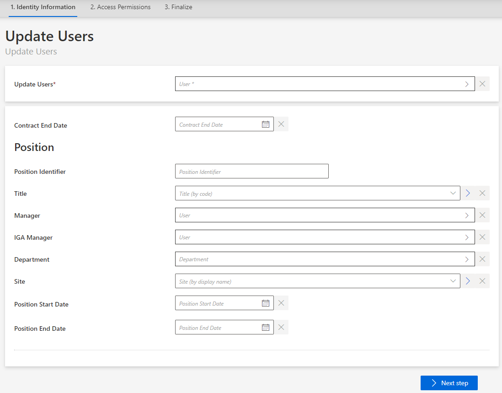

Update Multiple Identities
How to perform a same change in data for several identities simultaneously.
This part is not about changing the data model, but data itself.
Overview
When a same change is needed by a high number of users, then Identity Manager provides a UI workflow to perform this change for all selected identities simultaneously.
For example, if a whole department in the company is moved to a new working site, then all users working in said department must have their
Siteattribute updated.
Participants and Artifacts
Given users' data can be updated occasionally by their managers, but most often by the HR department.
| Input | Output |
|---|---|
| Identity repository (required) New identity data (required) |
Updated identity repository |
See the Create the Workforce Repository topic for additional information.
Update
Perform multiple updates by proceeding as follows:
-
Click on Multiple Updates, accessible from the directory on the home page.
-
Follow the workflow's instructions to perform the change, assign new entitlements if needed, and send the request.

If the workflow has been configured in this way, the update request may require a review. In this case, sending the request triggers the display of said request on the My Tasks screen for the reviewer, while the state of the request is pending. In this case, the requested updates will be displayed in Identity Manager only after the request has been reviewed.
Verify Data Update
In order to verify the process:
-
Check manually a sample in the
Userdirectory accessible from the home page. You should verify at least your own sheet and the sheets assigned to your hierarchy.
-
Check that every organization still has a manager. Organizations are accessible in the
Departmentdirectory on the home page.

If the system contains numerous organizations, it is also possible to list them with their managers through the Query module.
-
Create reports with indicators, for example, on the number of workers per type or per organization (through Identity Manager's predefined reports, the Query module or Power BI), to ensure that Identity Manager's content sticks to reality. See the Generate Reports topic for additional information.